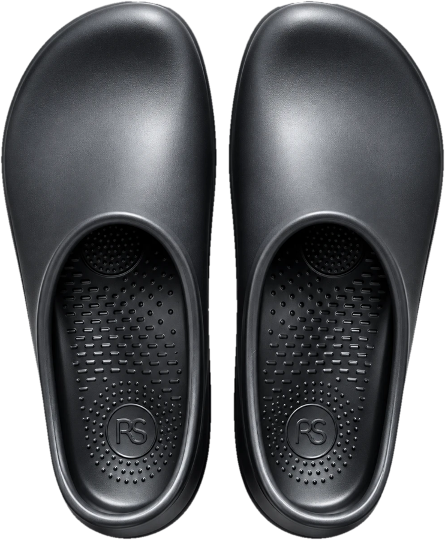
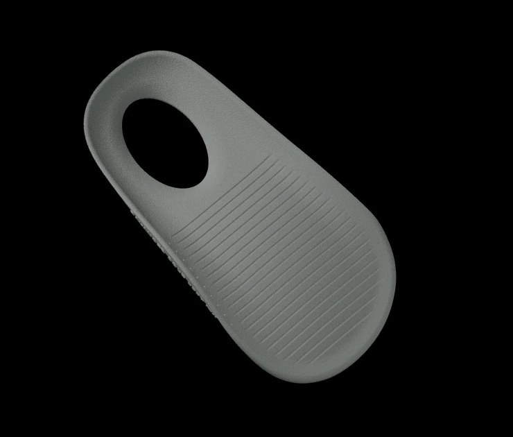

Made for your standing day
바닥에 처음 닿는 곳부터 마지막에 밀어내는 곳까지,4곳에만 그립 패드를 넣었어요.서 있는 하루의 반려도구, 라라슈.

정형외과 전문의 이문홍라라슈 설계 자문
이문홍 원장은 제품 설계 자문에 참여하고 자문료를 받았습니다.
Quad Grip
4곳의 그립 포인트
Arch-full Insole
신발은 그대로, 아치 밑만 꽉 채우는 반굽 인솔
